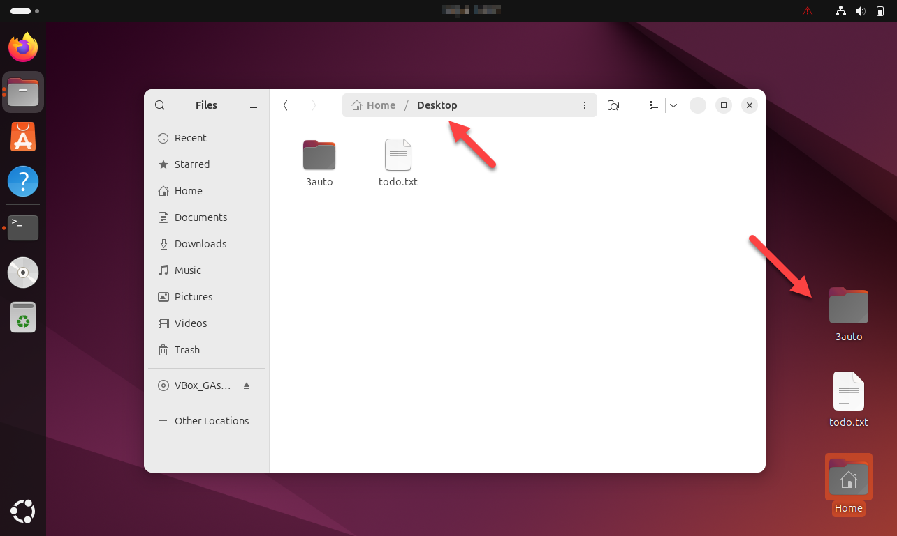

Bij cp blijft het origineel staan en komt er een tweede exemplaar bij. Bij mv
verhuist het bestand en blijft er één exemplaar over, en bij rm blijft er niets over.
mv staat voor move. Je zet er twee dingen achter, net als bij cp: wat
je verplaatst en waarheen. Geef je als bestemming een naam in dezelfde map, dan is het resultaat een
hernoeming.
Ga naar automatisering en hernoem a.txt naar d.txt.
total 12K
drwxrwxr-x 2 elm elm 4.0K Sep 4 14:31 .
drwxr-x--- 21 elm elm 4.0K Sep 4 14:16 ..
-rw-rw-r-- 1 elm elm 0 Sep 4 13:58 b.txt
-rw-rw-r-- 1 elm elm 0 Sep 4 13:58 c.txt
-rw-rw-r-- 1 elm elm 0 Sep 4 13:58 d.txt
-rw-rw-r-- 1 elm elm 26 Sep 4 13:55 todo.txt
a.txt staat er niet meer bij: er is geen tweede bestand gemaakt, de naam is
veranderd.
Ga naar 2auto, de kopie die je op de vorige pagina gemaakt hebt, en kijk of de naam
daar mee veranderd is.
total 12K
drwxrwxr-x 2 elm elm 4.0K Sep 4 14:32 .
drwxr-x--- 21 elm elm 4.0K Sep 4 14:16 ..
-rw-rw-r-- 1 elm elm 0 Sep 4 14:16 a.txt
-rw-rw-r-- 1 elm elm 0 Sep 4 14:16 b.txt
-rw-rw-r-- 1 elm elm 0 Sep 4 14:16 c.txt
-rw-rw-r-- 1 elm elm 26 Sep 4 14:16 todo.txt
Daar heet het bestand nog a.txt. Een kopie is vanaf het moment dat ze gemaakt is een
los bestand, en wat je met het origineel doet, laat haar onberoerd.
Ga naar je eigen map en hernoem 2auto naar 3auto. Voor een map werkt
mv hetzelfde als voor een bestand, en zonder -r.
total 136K
drwxr-x--- 21 elm elm 4.0K Sep 4 14:34 .
drwxr-xr-x 3 root root 4.0K Aug 22 15:41 ..
drwxrwxr-x 2 elm elm 4.0K Sep 4 14:32 3auto
drwxrwxr-x 2 elm elm 4.0K Sep 4 14:31 automatisering
drwxrwxr-x 2 elm elm 4.0K Sep 4 14:29 backup
drwxr-xr-x 2 elm elm 4.0K Sep 4 13:54 Desktop
drwxrwxr-x 2 elm elm 4.0K Sep 4 13:56 elektromechanica
drwxrwxr-x 2 elm elm 4.0K Sep 4 13:54 klimatisering
...
Verplaats de map nu wel: geef als bestemming een pad naar een andere map.
Controleer met ls -alh dat 3auto weg is uit /home/elm, en
kijk daarna op je bureaublad.

Dat is dus wat mv doet: blijft de bestemming in dezelfde map, dan hernoem je, en
wijst ze naar een ander pad, dan verplaats je.
rm staat voor remove.
Kopieer eerst de inhoud van backup naar elektromechanica, zodat daar
iets in staat om te wissen. Gebruik de wildcard.
total 12K drwxrwxr-x 2 elm elm 4.0K Sep 4 14:41 . drwxr-x--- 20 elm elm 4.0K Sep 4 14:35 .. -rw-rw-r-- 1 elm elm 0 Sep 4 14:41 a.txt -rw-rw-r-- 1 elm elm 0 Sep 4 14:41 b.txt -rw-rw-r-- 1 elm elm 0 Sep 4 14:41 c.txt -rw-rw-r-- 1 elm elm 26 Sep 4 14:41 todo.txt
Wis todo.txt en controleer het resultaat.
Ga naar je eigen map en probeer de map elektromechanica op dezelfde manier te
wissen.
rm: cannot remove 'elektromechanica/': Is a directory
De melding zegt wat er scheelt: het is een map. rm werkt op bestanden, en het weigert
elke map, of er nu iets in staat of niet. Wil je de map toch weg, dan gebruik je
-r, dezelfde optie als bij cp.
Wis de map recursief.
Er is in de terminal geen prullenbak: rm -r haalt de map weg met alles wat eronder
stond, en er is geen weg terug. Voer eerst pwd en ls -alh uit, zodat je
zeker weet op welke map je aan het werken bent.
Voer ls -alh uit op /home/elm. Je ziet er onder andere de map
klimatisering staan.
Wis de map klimatisering met haar inhoud, met één commando.
Wis de map backup met haar inhoud, ook met één commando.
Voer nog eens ls -alh uit op /home/elm. klimatisering en
backup staan er niet meer bij, en automatisering wel.